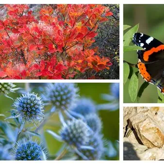

sab 24 ott · dalle 09:30
Laboratorio Carso - Mosaico di vita / Naravoslovno vodenje Kras - Mozaik življenja
Sabato 24 ottobre 2026 , dalle 9.30 alle 11.30, si terrà nell’area del Monte Stena, in Val Rosandra il laboratorio "Carso - Mosaico di vita". Il punto di ritrovo sarà presso la chiesetta di San Lorenzo/Jezero nel Comune di San Dorligo della Valle.
 Indicazioni
Indicazioni
- Costi e prenotazioni
- Costo non indicato · Prenotazione non indicata
- Programma
- Programma da verificare. Apri la fonte ufficiale per orari e possibili aggiornamenti.
- In caso di maltempo
- Nessuna indicazione specifica pubblicata.
- Note
- Acquisito automaticamente dalla fonte.
L’EVENTO
Descrizione completa
Sabato 24 ottobre 2026 , dalle 9.30 alle 11.30, si terrà nell’area del Monte Stena, in Val Rosandra il laboratorio "Carso - Mosaico di vita". Il punto di ritrovo sarà presso la chiesetta di San Lorenzo/Jezero nel Comune di San Dorligo della Valle.
Il laboratorio è organizzato dall’ Università del Litorale nell’ambito del progetto GOmini – Il patrimonio naturale nascosto dell’area transfrontaliera per le giovani generazioni , con la collaborazione operativa delle guide Estplore .
Insieme si esplorerà la landa carsica, si scoprirà come le attività umane l’hanno modellata nel corso del tempo e si conosceranno i suoi numerosi abitanti. Con l’aiuto di microscopi digitali si osserveranno da vicino piccoli organismi e dettagli interessanti che spesso passano inosservati.
La partecipazione è gratuita, ma è necessaria la registrazione anticipata tramite il modulo online su fabebook.
Dopo la registrazione, riceverete la conferma dell’iscrizione e ulteriori informazioni.
Il numero di posti è limitato. Lingua dell'evento: IT, SL
Contatto : gominiproject@gmail.com
Delavnica bo potekala 24.10.2026 od 9.30 do 11.30 na območju Stene v Dolini Glinščice. Dobimo se pri cerkvi sv. Lorenca / San Lorenzo Jezero.
Delavnico organizira Univerza na Primorskem v sklopu projekta GOmini - Skrita naravna dediščina čezmejnega prostora za mlade generacije ob operativnem sodelovanju vodnikov Estplore . Skupaj bomo raziskovali kraško gmajno, spoznavali, kako so jo skozi čas oblikovale človekove dejavnosti, ter odkrivali njene številne prebivalce. S pomočjo digitalnih mikroskopov si bomo od blizu ogledali drobne organizme in zanimive podrobnosti, ki jih pogosto spregledamo. Po registraciji boste na svoj elektronski naslov prejeli potrditev prijave in dodatne informacije. Jezik dogodka: IT, SL
IL PROGRAMMA
Programma e orari
Appuntamenti raccolti dalle fonti elencate. Dove manca un orario, non è ancora disponibile in questa scheda.
Programma pubblicato
- 24.10.2026
INFORMAZIONI UTILI
Prima di partire
- Controllare la fonte prima di partire.
ORGANIZZAZIONE